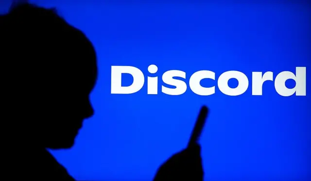

Discord é obrigado a desativar algumas funções pela ANPD, entenda o caso

Discord é obrigado a desativar algumas funções pela ANPD, entenda o caso
Após casos severos de crimes cibernéticos, a plataforma Discord foi acionada pela ANPD (Autoridade Nacional de Proteção de Dados), levando um ultimato para desativar a ação “Go Live”, chamadas de vídeo.
O aplicativo é famoso pelo meio de streamers e grupos de amigos, no qual - até a última semana – permitia gravação de tela ao vivo em ligações, chamadas de vídeos, servidores e muitos mais. Contudo, nos últimos tempos, vem recebendo mais atenção negativa por conta de usuários e suas “panelinhas” (nome usado para grupos específicos de pessoas que utilizam de má-fé), no qual dava instruções para crianças e adolescentes se mutilarem, torturem animais e até retirarem a própria vida ou a vida de terceiros.
Após o último caso de suicídio através de Redes Sociais, Janja da Silva – a Primeira-Dama – pediu apoio ao governo para derrubar a plataforma, dizendo ser nocivo para as crianças e adolescentes.
Desde então, ANPD entrou em contato com os representantes do Discord, pedindo que retirasse as lives streams, vídeo chamada, apresentações de telas e que melhorassem a verificação de idade, caso contrário, seriam banidos do Brasil.
A plataforma, no entanto, afirma estar colaborando com a Autoridade, mas que o caso de suicídio da menina de 13 anos não foi na plataforma deles, e sim, em outra rede e em live.
Em um trecho da nota oficial da empresa, diz: “Em cumprimento à determinação da Agência Nacional de Proteção de Dados (ANPD), suspendemos os recursos de vídeo do Discord no Brasil. O vídeo é uma parte importante e muito valorizada da experiência no Discord, permitindo que nossos usuários se comuniquem e criem conexões significativas ao compartilhar experiências, jogar juntos e manter contato com amigos e familiares".
Ainda assim, ainda mantém funcionários e equipes especializadas para derrubar as chamadas caso seja necessário.
Na visão de especialistas, alguns dizem que foram necessários, como a Maria Mello, do Instituto Alana. Marie Santini diretora do Laboratório de Estudos de Internet e Redes Sociais da Universidade Federal do Rio de Janeiro (NetLab UFRJ), achou que já estava na hora de alguém fazer isso.
Maria de Mello, informa que, “Começa a partir da aproximação de criminosos com adolescentes em outras redes sociais e que levam esses adolescentes para esse tipo de salas que são fechadas e onde eles realizam essas lives. E aí você, sem moderação de conteúdo, não consegue identificar esse cometimento de crimes”.
Já a opinião pública discorda de como o governo está agindo.
Alguns espectadores dizem que não faz sentido desativar essas ferramentas, o que atrapalha os streamers e pessoas de boa-fé. Outro lado, são críticas pesadas sobre o governo de Lula. Outra parte da população, diz que foi uma escolha certa, que os crimes ocorridos pela internet poderiam diminuir.
Por:Dino_raaaawr